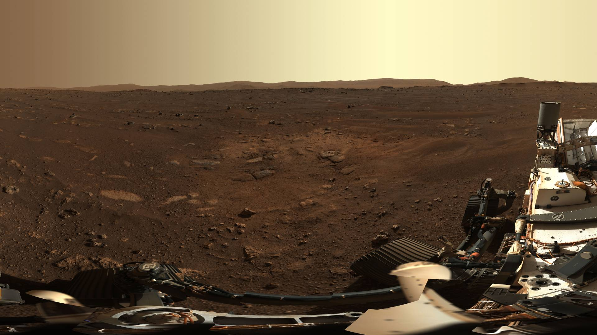
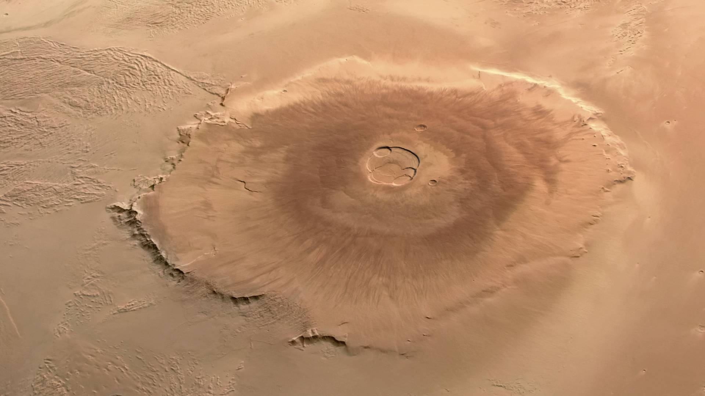
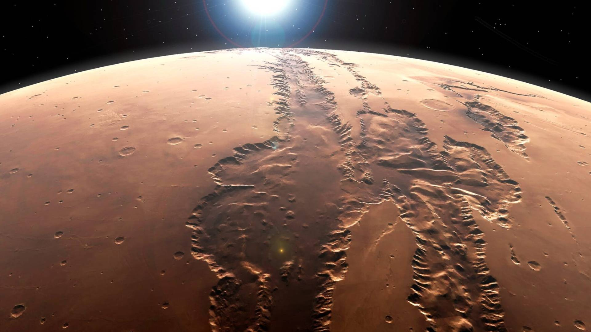
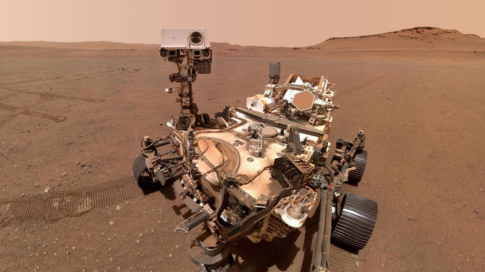

Mars
The Red Planet. Our next frontier.
A World of Rust and Dust
Mars is the fourth planet from the Sun and the second smallest planet in our solar system. Its surface is covered in iron oxide, a fine rusty dust that gives the planet its famous red color.
Long ago, Mars was warmer and wetter. Dried-up riverbeds and ancient lake basins show that liquid water once flowed across its surface, which is why scientists keep searching for signs of past life.
Today it is a cold, dry desert with a thin atmosphere made mostly of carbon dioxide. Robotic rovers like Curiosity and Perseverance are exploring it right now.

Mars at a Glance
-
6,779 km
Diameter, about half the size of Earth
-
228 million km
Average distance from the Sun
-
24h 37min
Length of one day, called a sol
-
687 days
Length of one year on Mars
-
2 moons
Phobos and Deimos
-
-60 °C
Average surface temperature
Landmarks

Olympus Mons, the tallest volcano in the solar system at about 22 km high.

Valles Marineris, a canyon system stretching about 4,000 km.

NASA's Perseverance rover searching for signs of ancient life.